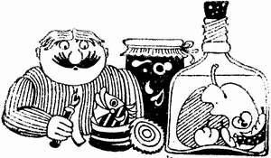

Mihai Christodorescu:
main
/
playground
/
food & wine
/
didi balmez
/ murături şi conserve
Calendar
Contact info
Reţete de Didi Balmez:
Murături şi conserve

Ardei cornul caprei (Capia) pentru iarnă
Ardei Capia copţi
Ardei verzi graşi cu sare
Ardei copţi pentru iarna
Ardei graşi pentru umplut cu carne
Gogoşari în oţet
Gogoşari bucăţi în oţet
Gogoşari uscaţi pentru iarna
Salata de gogoşari copţi si tocaţi pentru iarnă
Salata de gogoşari la borcan
Muraturi asortate
Varza murata
Ardei graşi umpluţi cu varză
Castraveţi în saramura
Castraveţi în oţet
Castraveţi muraţi pentru vară
Roşii si ardei graşi la sticle pentru ciorbe
Roşii întregi la borcane
Roşii întregi pentru salate de iarna
Bulion de roşii
Salată de vinete pentru iarnă
Vinete împănate şi murate
Vinete cu usturoi marinate
Conserve de vinete pentru musaca
Zacuscă
Sos picant pentru iarnă
Sos pentru iarnă
Fasole verde ţucără pentru iarnă
Fasole verde fiartă
Fasole grasă pentru iarnă
Fasole ţucără cu sos de roşii
Ghiveci pentru iarnă
Copyright 1998-2003 Mihai Christodorescu. All rights reserved.
Maintained by Mihai Christodorescu (
http://www.cs.wisc.edu/~mihai
).
Created: Mon Dec 21 21:12:13 PST 1998
Last modified: Fri Aug 29 16:24:37 CDT 2003